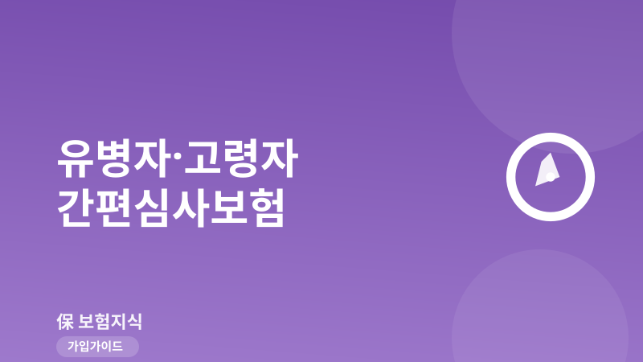
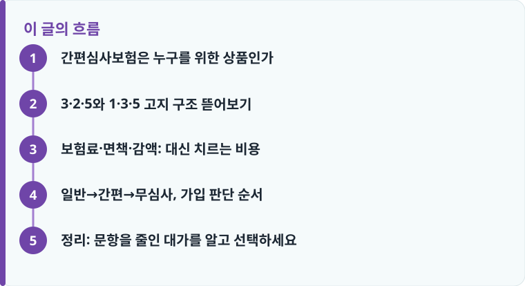

간편심사보험은 고지 문항을 3~4개로 줄인 상품이라 병력자도 가입 가능성이 높지만, 일반보험보다 보험료가 20~50% 이상 비싸므로 일반심사부터 시도하는 것이 원칙입니다.
대표적 고지 구조인 3·2·5(3개월·2년·5년)와 1·3·5는 물어보는 기간이 다릅니다. 청약서의 고지 문항을 직접 읽고 어디에 해당하는지 판단해야 합니다.
간편심사도 고지의무는 그대로 적용되고, 암 등은 90일 면책·가입 1~2년 내 50% 감액이 흔합니다. 가입 즉시 100% 보장이 아닙니다.
간편심사보험은 누구를 위한 상품인가
간편심사보험은 흔히 ‘간편고지보험’ ‘유병자보험’으로도 불립니다. 일반심사보험이 최근 5년간의 병력, 3개월 내 투약, 건강검진 이상 소견까지 열 개가 넘는 항목을 물어보는 반면, 간편심사보험은 고지 문항을 3~4개로 대폭 줄인 상품입니다. 문항이 적으니 고혈압·당뇨 같은 만성질환으로 약을 먹고 있거나, 몇 년 전 수술 이력이 있어 일반심사에서 거절·부담보를 받았던 사람도 가입 문턱을 넘을 가능성이 커집니다. 실제로 중장년·고령자 본인이나 부모님 보험을 알아보다가 ‘일반 가입은 안 된다’는 말을 듣고 이 상품을 처음 접하는 경우가 많습니다.
다만 오해하면 안 되는 지점이 있습니다. 간편심사보험은 ‘아무것도 안 물어보는’ 상품이 아닙니다. 물어보는 항목이 적을 뿐, 물어본 것에는 반드시 사실대로 답해야 하고 그 답에 따라 가입 여부가 갈립니다. 또 병력이 전혀 없거나 가벼운 사람이라면 굳이 이 상품을 고를 이유가 없습니다. 뒤에서 설명하듯 보험료가 상당히 비싸기 때문입니다. 건강검진 결과가 보험 가입에 어떤 영향을 주는지 궁금하다면 건강검진과 보험가입 글을 함께 보면 본인이 일반심사 대상인지 가늠하는 데 도움이 됩니다.
3·2·5와 1·3·5 고지 구조 뜯어보기
간편심사보험의 핵심은 ‘몇 개의 문항을, 몇 년 치를 물어보느냐’입니다. 시장에서 가장 널리 쓰이는 두 가지가 3·2·5와 1·3·5 구조입니다. 먼저 3·2·5는 세 개의 문항으로 이뤄집니다. ① 최근 3개월 이내에 입원·수술 또는 추가검사(재검사)가 필요하다는 의사 소견을 받은 적이 있는지, ② 최근 2년 이내에 질병이나 상해로 입원 또는 수술을 받은 적이 있는지, ③ 최근 5년 이내에 암을 비롯한 중대질병으로 진단·입원·수술을 받은 적이 있는지를 묻습니다. 세 문항 모두 ‘아니오’여야 통과하는 구조입니다.
1·3·5 구조는 여기서 한 단계 더 완화된 형태로 이해하면 쉽습니다. 예를 들어 최근 3개월 내 입원·수술·추가검사 소견 여부는 비슷하게 물으면서, 추가검사·재검사 소견을 묻는 기간을 1년으로 좁히고, 중대질병 이력은 5년으로 유지하는 식입니다. 즉 문항 개수나 물어보는 기간이 줄어 통과 가능성이 더 높아집니다. 다만 여기서 반드시 짚어야 할 점은, 3·2·5든 1·3·5든 상품마다 문항 조합과 표현이 조금씩 다르다는 것입니다. 같은 ‘3·2·5’라도 어떤 상품은 ‘추가검사’ 범위를 넓게, 어떤 상품은 좁게 정의합니다. 그래서 숫자만 외우지 말고 청약서의 실제 고지 문항을 한 줄씩 읽어보는 것이 가장 정확합니다.
일반적인 경향은 이렇습니다. 고지 문항이 적고 기간이 짧을수록(3·2·5보다 1·3·5처럼 완화될수록) 병력자가 가입하기는 쉬워지지만, 그만큼 보험사가 떠안는 위험이 커지므로 보험료는 더 비싸지는 방향으로 움직입니다. 반대로 문항이 많고 기간이 긴 구조는 통과가 까다로운 대신 보험료가 상대적으로 낮습니다. 본인 병력을 기준으로 ‘어떤 문항까지는 통과할 수 있는가’를 먼저 따져보고, 통과 가능한 범위에서 가장 문항이 많은(=보험료가 낮은) 구조를 고르는 것이 합리적인 접근입니다.
작성·검수 기준
이 글은 특정 보험사의 간편심사보험 가입을 권유하기 위한 것이 아니라, 병력이 있는 소비자가 고지 구조를 이해하고 스스로 판단할 수 있도록 일반적인 기준을 설명하기 위해 작성했습니다. 3·2·5, 1·3·5의 문항 조합과 물어보는 기간, 면책·감액 조건은 상품과 가입 시점에 따라 달라질 수 있으며, 본문의 숫자는 시장에서 흔히 쓰이는 예시입니다.
가입 여부와 보험금 지급은 개별 약관과 보험회사 심사에 따라 달라지므로, 실제 판단은 청약서 고지 문항과 상품설명서, 그리고 고지의무 위반과 예외 내용을 함께 확인한 뒤 내리는 것이 안전합니다.

보험료·면책·감액: 대신 치르는 비용
간편심사보험의 가장 큰 대가는 보험료입니다. 같은 보장 내용이라도 간편심사보험은 일반심사보험보다 대체로 20~50% 이상 비싼 경우가 많고, 완화 정도가 큰 구조일수록 그 차이는 더 벌어집니다. 물어보는 항목이 적다는 것은 보험사가 가입자의 건강 상태를 덜 알고 계약을 받는다는 뜻이고, 그 불확실성만큼 보험료에 얹히는 구조이기 때문입니다. 그래서 병력이 가볍거나 관리가 잘 되는 사람이 습관적으로 간편심사부터 알아보면, 통과할 수 있는 일반보험을 두고 불필요하게 비싼 보험료를 내게 되는 손해가 생깁니다.
면책과 감액도 반드시 확인해야 합니다. 간편심사보험이라고 해서 가입 즉시 100% 보장이 시작되는 것은 아닙니다. 암 등 주요 질병은 가입 후 90일 면책기간이 붙어 이 기간에 진단받으면 보장되지 않는 경우가 흔하고, 가입 후 1~2년 이내에 보험금 지급 사유가 생기면 약정금액의 50%만 감액 지급되는 조건도 많습니다. 즉 가입 직후 진단을 받으면 기대한 금액의 절반만 나올 수 있다는 뜻입니다. 이 면책·감액 개념 자체가 낯설다면 부모님 의료비를 준비하는 관점에서 부모님 실손·의료비 보험 글을 함께 보면 실손과 정액 보장의 역할 차이까지 정리하기 쉽습니다.
또 하나, 고지의무는 간편심사에서도 그대로 살아 있습니다. 문항이 적다고 해서 슬쩍 넘어가도 되는 것이 아니라, 물어본 항목에 사실대로 고지하지 않으면 나중에 계약이 해지되거나 보험금이 부지급될 위험이 있습니다. 반대로 청약서가 묻지 않은 병력은 스스로 밝힐 의무가 없습니다. 예를 들어 3·2·5 구조가 5년 내 중대질병만 묻는데 7년 전 수술 이력을 굳이 적을 필요는 없습니다. ‘물어본 것에는 정확히, 묻지 않은 것은 그대로’가 원칙입니다. 고지 실수로 인한 분쟁을 피하려면 가입 상담 때 문항을 함께 읽으며 하나씩 확인하는 것이 좋습니다.
일반→간편→무심사, 가입 판단 순서
병력이 있다고 곧바로 간편심사로 직행하는 것은 손해일 수 있습니다. 보험료 차이가 크기 때문에, 아래 순서대로 위에서부터 시도하며 내려오는 것이 정석입니다. 부모님처럼 연령이 높아 간병·치매까지 함께 고려해야 한다면 치매·간병보험 구조도 같은 순서로 검토하면 됩니다.
- 먼저 일반심사보험을 시도합니다. 만성질환이 있어도 수치가 관리되고 있으면 조건부(부담보)로 가입되는 경우가 있어, 지레 포기하지 말고 청약을 넣어봅니다.
- 일반심사에서 거절 또는 특정 부위 부담보가 나오면, 그 결과를 근거로 간편심사보험을 검토합니다. 이때 본인이 통과 가능한 가장 문항이 많은(보험료가 낮은) 구조를 우선합니다.
- 간편심사 청약서의 3·2·5 / 1·3·5 고지 문항을 직접 읽고, 최근 3개월·1~2년·5년 이력에 해당하는 것이 있는지 하나씩 확인합니다.
- 가입 전 면책 90일, 감액 1~2년 50% 조건과 보장 개시일을 확인해, 언제부터 온전한 보장이 시작되는지 계산합니다.
- 간편심사마저 어렵다면 무심사(무진단) 상품을 마지막으로 검토하되, 보장 범위가 좁고 보험료가 더 높은 점을 감안해 정말 필요한 담보만 최소한으로 설계합니다.
정리: 문항을 줄인 대가를 알고 선택하세요
간편심사보험은 병력 때문에 보험을 포기했던 사람에게 분명 유용한 선택지입니다. 하지만 ‘가입이 쉽다’는 장점 뒤에는 20~50% 이상 비싼 보험료, 90일 면책, 1~2년 50% 감액이라는 대가가 따라옵니다. 그러니 일반심사를 먼저 시도하고, 거절될 때 간편심사로 내려오며, 그마저 어려울 때 무심사를 보는 순서를 지키는 것이 손해를 줄이는 길입니다. 무엇보다 3·2·5와 1·3·5의 숫자를 외우기보다, 청약서 고지 문항을 직접 읽고 물어본 것에 사실대로 답하는 습관이 나중의 부지급 분쟁을 막아 줍니다.
다른 보험 정보 글이 궁금하다면 보험지식 블로그에서 이어 읽어 보세요. 가입 전에는 반드시 약관과 상품설명서를 확인하는 것이 가장 안전한 방법입니다.